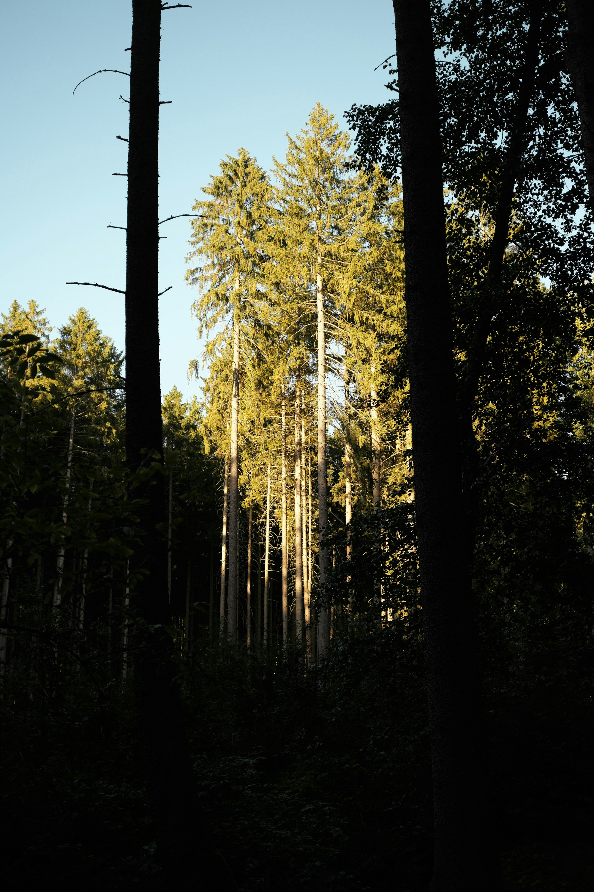

十勝エリアの特殊伐採・危険木処理
倒せない場所にある、 危険な木を下ろす。
建物や電線、境界に近い一本も、根元からではなく上から少しずつ。
ロープと技術で、周りを傷つけずに木を下ろします。
こんなお困りごとに対応します
実際に現場で多いご相談です。無理な作業はお引き受けせず、状況を確認したうえでご案内します。
建物や屋根に近い危険木
倒れる方向を制御できない位置にある木を、上から順番に下ろします。
車が入れない狭い場所
重機を使わず、ロープと人力での搬出が必要な現場に対応します。
境界を越えた枝
隣地や道路にはみ出した枝の伐採・処理をご相談いただけます。
台風・積雪による倒木
風雪で倒れた木、傾いた木の緊急処理にも対応します。
枝払い・間伐・除伐
防風林や敷地林の込み合った枝や木の整理を承ります。
伐採後の搬出・処分
切った木をその場に残さず、搬出・処分までまとめてご依頼いただけます。
事業内容
木を「倒す」だけでなく、「安全に下ろす」ための技術で対応します。個人のお宅から農地の防風林まで、規模を問わずご相談ください。
- 庭木や敷地内の伐採
- 手が届かない場所にある木でも、安全に伐採します。
- 高所の庭木剪定
- 庭木や生垣の樹形を整えながら、高い場所の枝も丁寧に剪定します。
- 倒木処理
- すでに倒れてしまった木の撤去・処理を行います。
- 草刈り
- 伸びた雑草や敷地内の草刈りも承ります。
- 搬出・処分
- 切った木材の搬出・処分までご相談いただけます。

作業の流れ
お問い合わせから作業完了まで、3つのステップで進めます。
-
1
お問い合わせ
お問い合わせフォームから、木の状態や気になる点をご相談ください。担当より折り返しご連絡いたします。
-
2
現地調査
実際の現場を確認し、木の高さや周囲の状況に合わせて、作業方法と日程を検討します。
※十勝管内はお見積り無料です。管外は別途費用が発生する可能性があります。
-
3
作業
安全を最優先に、天候を見ながら計画に沿って進めます。作業後は周辺の清掃まで行います。
施工事例
※ 施工事例は準備中です。作業前後の写真とあわせて、掲載許可をいただいたものから公開します。
- 準備中
市町村・依頼内容・作業結果を、写真とあわせて近日公開します。
- 準備中
市町村・依頼内容・作業結果を、写真とあわせて近日公開します。
- 準備中
市町村・依頼内容・作業結果を、写真とあわせて近日公開します。
木のことでお困りではありませんか
倒れそうな木、境界からはみ出た枝など、些細なことでもまずはご相談ください。
料金について
- 十勝管内の現地調査とお見積りは無料です。
管外は別途費用が発生する可能性があります。 - 木の状態によって作業方法が変わるため一律の料金は設定しておりません。現地調査のうえ、お見積りいたします。
対応地域
北海道・十勝エリアを中心に活動しています。十勝管外の方もお気軽にお問い合わせください。
よくあるご質問
見積もりや現地調査は無料ですか
はい、無料です。まずはお気軽にお問い合わせください。
保険には加入していますか
加入している保険の詳細は、現在確認中です。確定次第、こちらに掲載します。
写真だけで見積もりできますか
概算のご案内は可能ですが、正式な金額は現地調査のうえでお伝えします。
狭い場所でも作業できますか
はい。重機が入れない場所は、ロープを使った特殊伐採で対応します。
木や枝の処分もお願いできますか
はい、搬出・処分・チップ化までまとめてご依頼いただけます。
隣地や道路にはみ出した枝も対応できますか
対応可能です。状況を確認のうえご案内します。
雨天や強風時はどうなりますか
安全のため、天候を見て日程を調整させていただく場合があります。
作業前に準備することはありますか
車両の駐車スペースの確保など、事前にご案内いたします。
支払い方法は何ですか
詳細は準備中です。ご契約時にご案内します。
キャンセル料はかかりますか
詳細は準備中です。ご契約時にご案内します。
お問い合わせ
下記フォームよりご連絡ください。内容を確認のうえ、折り返しご連絡いたします。